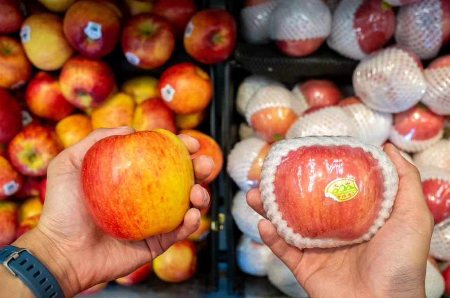
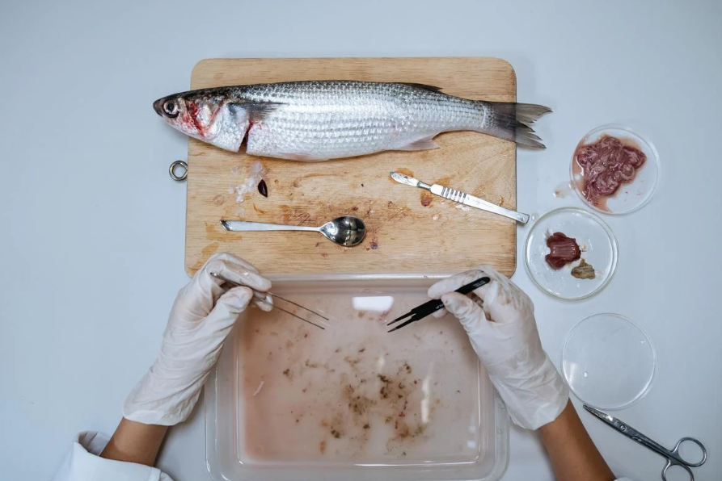

IMPACT
ผลกระทบของไมโครพลาสติก เนื่องจากไมโครพลาสติก ยากต่อการเก็บและการกำจัด ทำให้ตกค้างต่อสิ่งแวดล้อมได้ง่าย และด้วยไมโครพลาสติกเกิดจากเครื่องอุปโภคเช่น โฟมล้างหน้า สครับ เมื่อใช้แล้วสารพวกนี้ก็ถูกชะลงท่อระบายน้ำและผ่านการบำบัดน้ำเสียสู่สิ่งแวดล้อม เมื่อสัตว์น้ำกินเข้าไปจะทำให้เกิดการสะสมในห่วงโซ่อาหาร ทำให้เกิด Biomagnification ซึ่งจะส่งผลกระทบต่อสุขภาพของสิ่งมีชีวิต ผลกระทบต่อสุขภาพเช่น ทำลายเนื้อเยื้อหลอดเลือด ส่งผลกระทบต่อหัวใจ และรายงานบางส่วนกล่าวว่าสารพิษพวกโพลีไซคลิกอะโรมาติกไฮโดรคาร์บอน (PAHs) โพลีคลอริเนตไบฟีนิล (PCBs) และดีดีที (DDT) ปนเปื้อนอยู่ในไมโครพลาสติกซึ่งสารเหล่านี้ก็ทำให้เกิดโรคมะเร็งได้
ไมโครพลาสติกย้อนกลับมายังห่วงโซ่อาหาร นักวิจัยจากอิตาลี University of Catania พบไมโครพลาสติกในแครอท ผักกาดหอม แอปเปิ้ลและลูกแพร์ พบปริมาณไมโครพลาสติกในแอปเปิ้ล 1 กรัม เฉลี่ย 195,500 ชิ้น ส่วนบล็อคโคลี่และแครอท เป็นผักที่พบไมโครพลาสติกมากที่สุดโดยพบไมโครพลาสติกในปริมาณมากกว่า 100,000 ชิ้นต่อผัก 1 กรัม หลังจากนั้นยังพบว่าไมโครพลาสติกซึมเข้าไปในรากของผักกาดหอมและลำต้นข้าวสาลีด้วย
ในเดือนเม.ย. พ.ศ.2563 สถาบันผู้บริโภคของฮ่องกงได้นำเกลือมาทดสอบ และพบไมโครพลาสติกจากเกลือ20%ที่นำมาทดสอบปนเปื้อนไมโครพลาสติกประมาณ 114 – 17,200 มิลลิกรัม ในเกลือทดลอง 1 กิโลกรัม โดยไมโครพลาสติกเหล่านี้เป็นประเภทPolypropyleneหรือPP ซึ่งเป็นชนิดเดียวกับที่ทำขวดพลาสติก
จากการทดลองของมหาวิทยาลัย The Education University of Hong Kong ใน พ.ศ.2560 พบไมโครพลาสติกในปลากระบอกเทาถึง 60% โดยพบปริมาณเฉลี่ย 4.3 ชิ้น ต่อปลา 1 ตัว และยังพบไมโครพลาสติกในปลาทะเลชนิดอื่นๆอีกด้วย
